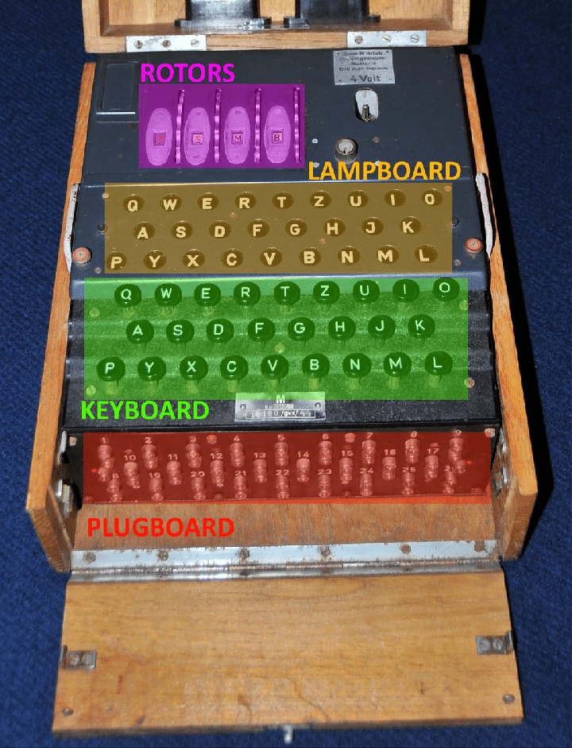

Historia de la Máquina Enigma
La máquina Enigma, desarrollada en Alemania la República de Weimar después de la Primera Guerra Mundial...
Funcionamiento de la Máquina Enigma
Enigma era una máquina de cifrado electromecánica. Utilizaba una serie de rotores y un panel de enchufes para cifrar mensajes...
Impacto en la Segunda Guerra Mundial
"La contribución de los criptoanalistas en Bletchley Park fue decisiva para la victoria aliada." — Winston Churchill
Partes de la Máquina Enigma
Curiosidades sobre la Máquina Enigma
- Alan Turing, uno de los padres de la ciencia de la computación, precursor de la informática moderna y matemático británico, fue clave en descifrar el código de la Enigma.
- La Máquina
Enigma
tuvo varias versiones a lo largo de los años.